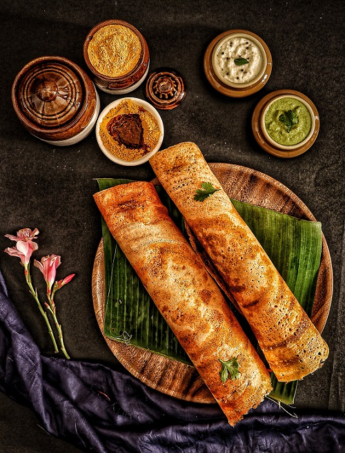

South Indian Dosa
- 1 cup raw rice (regular or parboiled)
- 1/4 cup urad dal (split black gram)
- 1 tablespoon chana dal (split chickpeas)
- 1 tablespoon fenugreek seeds
- Water (for soaking and grinding)
- Salt to taste
- Dosa batter
- Oil or ghee (clarified butter) for cooking
- 2 large potatoes, boiled and mashed
- 1 tablespoon oil
- 1 teaspoon mustard seeds
- 1 teaspoon cumin seeds
- 1 medium onion, finely chopped
- 1-2 green chilies, finely chopped
- A pinch of asafoetida (hing)
- A few curry leaves
- Turmeric powder
- Salt to taste
Ingredients of Dosa
For Making Dosas:
Optional Filling (Masala Dosa):
- Dosa Batter Preparation:
- Wash the rice, urad dal, chana dal, and fenugreek seeds separately and soak them in enough water for 4-6 hours (or overnight).
- After soaking, drain the water and grind the soaked rice, dal, and fenugreek seeds together to make a smooth batter. Add water as
needed while grinding to get a pancake-like batter consistency. - Transfer the batter to a large bowl, add salt to taste, and mix well. Allow the batter to ferment by covering the bowl and leaving it
in a warm place for about 8-12 hours or until it doubles in volume.
- Making Dosas:
- Once the batter has fermented, give it a gentle stir.
- Heat a non-stick or cast-iron dosa tawa (griddle) on medium-high heat. Sprinkle a few drops of water on the tawa; if it sizzles, the tawa is ready.
- Pour a ladleful of the dosa batter on the hot tawa and spread it in a circular motion to form a thin, even layer. You can make the dosa as big or small as you like.
- Drizzle a little oil or ghee around the edges and on the top surface of the dosa.
- Cook the dosa on medium heat until the bottom turns golden brown and crispy, and the top surface cooks through (you'll notice small holes forming).
- Once cooked, use a flat spatula to carefully lift and fold the dosa in half or roll it into a cylindrical shape. Serve hot with coconut
chutney, sambar, or any chutney of your choice.
- Optional Masala Dosa Filling:
- Heat oil in a pan and add mustard seeds. When they start to splutter, add cumin seeds, asafoetida, and curry leaves.
- Add chopped onions and green chilies, and sauté until the onions become translucent.
- Add turmeric powder and salt to taste. Mix well.
- Add the mashed potatoes to the pan and mix everything together, creating the masala filling for the dosa.
- Now, spread a thin layer of the masala filling on one-half of the dosa, fold it over, and serve hot with chutney and sambar.
Recipe
